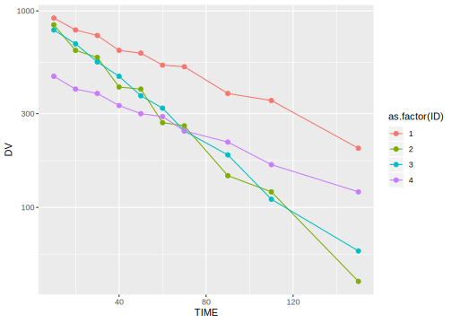
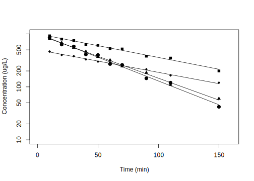

2 One compartment model - IV dosing
wnl 라이브러리를 불러오고 자료를 읽어옵니다. 4명의 IV 투약 후 농도 자료를 불러와 그림을 자료 탐색을 할 수 있습니다.
require(wnl)
dPK01 = read.csv("data/PK01.csv", skip=1)
colnames(dPK01) = c("TIME", "DV", "ID")
library(ggplot2)
ggplot(dPK01, aes(TIME, DV, group = ID, color = as.factor(ID))) +
geom_line() + geom_point() + scale_y_log10()
- 4명의 피험자 모두 대략적으로 시간에 따른 농도 감소가 단항 지수함수적인 것을 관찰할 수
있습니다.
- 피험자 1과 2를 비교하면 2번 피험자가 AUC가 더 작으며, 따라서 청소율이 더 클 것이라
예상할 수 있으며, Y 절편이 거의 같은 것으로 보아 분포용적이 유사할 것으로 보입니다.
- 피험자 3과 4의 경우 곡선이 교차하는 형태로 눈으로는 어느 쪽이 AUC가 클지 알기 어렵고, Y절편에 해당하는 농도가 높은 쪽이 분포용적이 더 작을 것이라 예상할 수 있습니다.
4명 자료의 NCA 분석을 tblNCA() 함수를 사용해 계산할 수 있습니다.
| ID | b0 | CMAX | CMAXD | TMAX | TLAG | CLST | CLSTP | TLST | LAMZHL | LAMZ | LAMZLL | LAMZUL | LAMZNPT | CORRXY | R2 | R2ADJ | AUCLST | AUCALL | AUCIFO | AUCIFOD | AUCIFP | AUCIFPD | AUCPEO | AUCPEP | AUMCLST | AUMCIFO | AUMCIFP | AUMCPEO | AUMCPEP | C0 | AUCPBEO | AUCPBEP | VZO | VZP | CLO | CLP | MRTIVLST | MRTIVIFO | MRTIVIFP | VSSO | VSSP |
|---|---|---|---|---|---|---|---|---|---|---|---|---|---|---|---|---|---|---|---|---|---|---|---|---|---|---|---|---|---|---|---|---|---|---|---|---|---|---|---|---|---|
| 1 | 6.918914 | 920 | 92.0 | 10 | NA | 200 | 211.19414 | 150 | 66.38766 | 0.0104409 | 10 | 150 | 10 | -0.9943381 | 0.9887083 | 0.9872969 | 77590.00 | 77590.00 | 96745.43 | 9674.543 | 97817.57 | 9781.757 | 19.799828 | 20.67887 | 4337000 | 9044967 | 9308475 | 52.05068 | 53.40805 | 1058.0000 | 10.222705 | 10.110658 | 9.899914 | 9.791405 | 0.1033641 | 0.1022311 | 55.89638 | 93.49244 | 95.16158 | 9.663758 | 9.728475 |
| 2 | 6.934162 | 850 | 85.0 | 10 | NA | 42 | 45.17696 | 150 | 33.28625 | 0.0208238 | 10 | 150 | 10 | -0.9950967 | 0.9902174 | 0.9889946 | 48374.13 | 48374.13 | 50391.05 | 5039.105 | 50543.61 | 5054.361 | 4.002536 | 4.29230 | 1967000 | 2366394 | 2396605 | 16.87776 | 17.92557 | 1146.8254 | 19.813295 | 19.753490 | 9.529848 | 9.501083 | 0.1984480 | 0.1978489 | 40.66223 | 46.96061 | 47.41658 | 9.319237 | 9.381321 |
| 3 | 6.877619 | 800 | 80.0 | 10 | NA | 60 | 56.80923 | 150 | 36.63672 | 0.0189195 | 10 | 150 | 10 | -0.9984467 | 0.9968957 | 0.9965077 | 48430.88 | 48430.88 | 51602.22 | 5160.222 | 51433.57 | 5143.357 | 6.145738 | 5.83799 | 2077250 | 2720574 | 2686362 | 23.64661 | 22.67423 | 941.1765 | 16.871139 | 16.926460 | 10.242896 | 10.276482 | 0.1937901 | 0.1944256 | 42.89102 | 52.72203 | 52.22974 | 10.217007 | 10.154796 |
| 4 | 6.207537 | 465 | 46.5 | 10 | NA | 120 | 117.19292 | 150 | 72.01703 | 0.0096248 | 10 | 150 | 10 | -0.9971818 | 0.9943716 | 0.9936681 | 39677.81 | 39677.81 | 52145.65 | 5214.565 | 51853.99 | 5185.399 | 23.909634 | 23.48167 | 2245250 | 5410815 | 5336766 | 58.50441 | 57.92864 | 540.5625 | 9.641865 | 9.696095 | 19.924695 | 20.036761 | 0.1917706 | 0.1928492 | 56.58704 | 103.76352 | 102.91908 | 19.898788 | 19.847860 |
2.1 Compartmental analysis
V, K만 있으면 단항 지수함수적 농도 감소를 보이는 IV dosing의 농도를 나타낼 수 있으므로 아래와 같이 간단한 함수를 만들 수 있습니다.
fPK01 = function(THETA) # Prediction function
{
V = THETA[1]
K = THETA[2]
Cp = DOSE/V*exp(-K*TIME) # External DOSE, TIME, eq 1:2
return(Cp)
}여러명의 자료를 분석하기 위해 for 함수를 사용하였습니다. 복잡해보이지만 nlr 함수를 사용하는 것이 핵심입니다.
Result = vector()
for (i in 1:nID) {
cID = IDs[i]
Data = dPK01[dPK01$ID == cID,]
TIME = dPK01[dPK01$ID == cID,"TIME"]
Res = nlr(fPK01, Data, pNames=c("V", "k"), IE=c(20, 0.2),
SecNames=c("CL", "AUC", "AUMC" , "Thalf", "MRT"),
SecForms=c(~V*k, ~DOSE/V/k, ~DOSE/V/k/k, ~log(2)/k, ~1/k))
Result = rbind(Result, cbind(ID=cID, Res$Est))
} ; Result## ID V k AddErrVar AddErrSD CL
## PE 1 9.9784487 0.0102560820 432.73767 20.802348 0.102339788
## SE 1 0.1834206 0.0003873927 193.52612 4.651545 0.002597160
## RSE 1 1.8381673 3.7771994487 44.72135 22.360674 2.537781676
## PE 2 9.8162458 0.0206612797 753.97041 27.458522 0.202816199
## SE 2 0.3308035 0.0010187679 337.18516 6.139900 0.005970426
## RSE 2 3.3699589 4.9308074311 44.72127 22.360637 2.943762128
## PE 3 10.2230093 0.0190412124 77.05108 8.777874 0.194658492
## SE 3 0.1086744 0.0003052182 34.45832 1.962794 0.001891101
## RSE 3 1.0630369 1.6029348653 44.72140 22.360699 0.971496569
## PE 4 19.9471606 0.0098139570 72.19448 8.496733 0.195760575
## SE 4 0.2954327 0.0003070959 32.28660 1.899942 0.004148218
## RSE 4 1.4810766 3.1291754937 44.72170 22.360849 2.119026160
## AUC AUMC Thalf MRT
## PE 9.771371e+04 9.527391e+06 67.5840131 97.503121
## SE 2.479761e+03 5.875882e+05 2.5527830 3.682887
## RSE 2.537782e+00 6.167356e+00 3.7771994 3.777199
## PE 4.930573e+04 2.386383e+06 33.5481244 48.399713
## SE 1.451443e+03 1.763351e+05 1.6541934 2.386497
## RSE 2.943762e+00 7.389220e+00 4.9308074 4.930807
## PE 5.137202e+04 2.697939e+06 36.4024709 52.517664
## SE 4.990774e+02 6.551250e+04 0.5835079 0.841824
## RSE 9.714966e-01 2.428243e+00 1.6029349 1.602935
## PE 5.108281e+04 5.205118e+06 70.6287162 101.895699
## SE 1.082458e+03 2.672940e+05 2.2100965 3.188495
## RSE 2.119026e+00 5.135215e+00 3.1291755 3.1291752.2 Modeling Result
# Figure 1.1, p 470
plot(0, 1, type="n", xlim=c(0, 160), ylim=c(10, 1000), log="y", xlab="Time (min)", ylab="Concentration (ug/L)")
for (i in 1:nID) {
cID = IDs[i]
TIME = dPK01[dPK01$ID == cID,"TIME"]
points(TIME, dPK01[dPK01$ID == cID,"DV"], pch=14+i)
cTHETA = Result[Result[,"ID"]==cID & rownames(Result)=="PE", c("V", "k")]
lines(TIME, fPK01(cTHETA))
}
Bae, Kyun-Seop. 2018. Wnl: Minimization Tool for Pharmacokinetic-Pharmacodynamic Data Analysis. https://CRAN.R-project.org/package=wnl.
Gabrielsson, Johan. 2016. Pharmacokinetic and Pharmacodynamic Data Analysis : Concepts and Applications. Stockholm: Apotekarsocieteten.